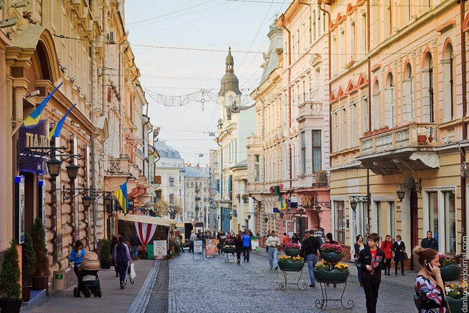

ЧНУ
Чернівецький національний університет імені Юрія ФедьковичаКАРПАТИ
КарпатиХОТИНСЬКА ФОРТЕЦЯ
Хотинська фортеця

ВУЛИЦЯ ОЛЬГИ КОБИЛЯНСЬКОЇ
Вулиця Ольги Кобилянської
КАРПАТИ
КарпатиГОРА ТОМНАТИК
Гора ТомнатикРАТУША
Чернівецька ратушаБДМУ
Буковинський державний медичний університетТЕАТР
Чернівеьцикй театрЦікаві факти про Чернівці
У Чернівцях деякий час працював Булгаков та лікував хворих у приміщенні Буковинської лікарні. Не всім відомо про те, що автор легендарного роману "Майстер і Маргарита" Михайло Булкаков жив у Чернівцях в 1916-му році. Адже за професією Булгаков - лікар. До Чернівців він приїжджав не розшукувати літературних героїв, а лікувати. В офіційній біографії письменника про його перебування на Буковині відомо небагато.
В Чернівцях один з кінотеатрів відкрито в приміщенні колишньої синагоги. Історія будівлі, в якій знаходиться сучасний кінотеатр "Чернівці", бере початок у далекому 1877 році, коли єврейській частині населення міста передали цю споруду для здійснення молитви. Архітектором будівлі був професор Юліан Захаревич. У 40-х роках синагогу неодноразово намагалися зруйнувати, однак храм залишився стояти, нехай і наполовину знищеним. Будівлю відновили в 1959 році, коли збудувавши храм назад, перетворили його в кінотеатр "Жовтень". У минулому синагога і одна з головних визначних пам'яток міста, в наш час радує глядачів чарівних Чернівців найбільшим залом в місті і демократичними цінами на квитки.
Ляльковий Театр у Чернівцях - одна з найстаріших будівель в місті, цю будівлю побудували з каміння колишньої фортеці на горі Цецино. В 1782 році, за часів входження Буковини до складу Австро-Угорської імперії, в Чернівцях було збудовано «Будинок полковника», що імпозантно розташувався по вулиці, яка сьогодні, як і в австрійський період, називається Головною. Відомий історик та етнограф Буковини Раймонд Фрідріх Кайндль в своїй книзі «Сучасні Чернівці», що є першою працею з історії міста, пише: ««Будинок полковника» використовувався для військових цілей, а після пожежі в 1866 р., відтак 1904 р. був відреставрований, отримавши свій теперішній вигляд. Він використовувався частково як військове казино.» В румунський період будинок називався «Офіцерським клубом». За часів радянської влади дане приміщення було «Будинком політичної просвіти Чернівецького обкому КП України». А з 1983 року будинок відчинив свої двері дітям. Тут розмістився обласний театр ляльок.
Окрасою і гордістю Чернівців є ансамбль резиденції митрополитів Буковини й Далмації